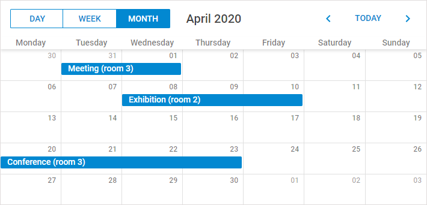
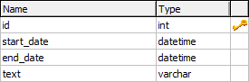

In this tutorial we want to consider the creation of a standard scheduler that loads data from a database and saves it back. The final code of the tutorial can be used as the start point while creating applications with dhtmlxScheduler.
This tutorial discusses the sequence of steps needed for implementing Scheduler with PHP. If you want to create Scheduler with a different language, check the available options in the list below:
Follow the step-by-step guide to create such an application.
The complete source code is available on GitHub.

Related sample: Loading data from a database
Let's start our application with creating a new HTML file and including the required scheduler code files to it.
The required code files are:
<!DOCTYPE html>
<html>
<head>
<title>How to start</title>
<script src="../scheduler/dhtmlxscheduler.js" type="text/javascript"></script>
<link rel="stylesheet" href="../scheduler/dhtmlxscheduler.css" type="text/css">
</head>
<body>
//your code will be here
</body>
</html>
Let's quickly explore the structure of the dhtmlxScheduler package to find out where to look for the files.
Before initialization of the scheduler, you should define the related DIV containers for its elements.
The standard set of 'divs' (needed for the scheduler) looks like this:
<div id="scheduler_here" class="dhx_cal_container" style='width:100%; height:100%;'>
<div class="dhx_cal_navline">
<div class="dhx_cal_prev_button"> </div>
<div class="dhx_cal_next_button"> </div>
<div class="dhx_cal_today_button"></div>
<div class="dhx_cal_date"></div>
<div class="dhx_cal_tab" name="day_tab"></div>
<div class="dhx_cal_tab" name="week_tab"></div>
<div class="dhx_cal_tab" name="month_tab"></div>
</div>
<div class="dhx_cal_header"></div>
<div class="dhx_cal_data"></div>
</div>
To work correctly in the full-screen mode in different browsers, define the following style for the scheduler:
<style>
html, body{
margin:0px;
padding:0px;
height:100%;
overflow:hidden;
}
</style>
If you don't use the full-screen mode, you don't need to specify that style. Specify the desired CSS properties directly in the main div:
<div id="scheduler_here" class="dhx_cal_container"
style='width:200px; height:300px; padding:10px;'>
...
After you have finished the preparations, you can move to initialization. Beware, the scheduler is a static object and can be instantiate on the page once. To refer to the scheduler's instance, use dhtmlxScheduler or simply scheduler.
scheduler.init('scheduler_here', new Date(),"month");
If you run the app now, you can already see a scheduler on the page. But it won't contain any data.
To populate the scheduler, we will take the data from a sample data source. We will use the easiest of the ways and specify the data source as an inline object.
To load data from an inline object, use the parse method.
The properties of a data object are:
var events = [
{id:1, text:"Meeting", start_date:"2019-11-14 14:00",end_date:"2019-11-14 17:00"},
{id:2, text:"Conference",start_date:"2019-11-13 12:00",end_date:"2019-11-13 19:00"},
{id:3, text:"Interview", start_date:"2019-11-14 09:00",end_date:"2019-11-14 10:00"}
];
scheduler.parse(events);//takes the name and format of the data source
Read this and further steps if you want to load data from a database instead of from an inline object.
Now, if you have decided to load data from the server - you need to create a table in your database as in:

You can execute the following code to create the table:
CREATE TABLE `events` (
`id` int(11) NOT NULL AUTO_INCREMENT,
`start_date` datetime NOT NULL,
`end_date` datetime NOT NULL,
`text` varchar(255) NOT NULL,
PRIMARY KEY (`id`)
)
Besides the aforementioned fields, you can create any number of extra ones, which then can be passed to the client side and mapped to the lightbox.
Beware, the format of the DataTime data type is '%Y-%m-%d %H:%i' that differs from the date format expected by the scheduler ('%m/%d/%Y %H:%i'). So, to provide correct data conversion, you should change the default scheduler format. It can be achieved by specifying the date_format configuration option.
Note, any configuration options go BEFORE the initialization string, i.e.:
scheduler.init('scheduler_here',new Date(),"month");
To load data from a database, use the load method where specify the backend url as a parameter. You can implement the backend by yourself using our guides, but for this tutorial we'll cover the PHP connector library as the quickest way.
So, for our task you need to call the method as shown below:
//method takes the url to the file that will process CRUD operations on the server
scheduler.load("data/connector.php");
You can download the connector library from the official repository https://github.com/DHTMLX/connector-php
The server-side script for dhtmlxScheduler is the following:
<?php
require_once("./connector/scheduler_connector.php");
$res = new PDO("mysql:host=localhost;dbname=scheduler", "username", "password");
$connector = new SchedulerConnector($res);
$connector->render_table("events","id","start_date,end_date,text");
Note, you can name the table fields, as you want. In any case, the scheduler interprets 3 first fields to load, as the required ones. For instance, if you load data as in:
$connector->render_table("events","id","event_start,event_end,event_text");
the interpretation will be as follows:
You can read about recurring events in the Recurring Events article.
A recurring event is stored in the database as a single record that can be splitted up by Scheduler on the client side. If you need to get dates of separate events on the server side, use a helper library for parsing recurring events of dhtmlxScheduler on PHP.
You will find the ready library on GitHub.
If you run the app now, you will see that the scheduler is able to load data from the database, but unable to save it back. To 'force' the scheduler save data in the database, use dataProcessor.
It's very easy to use dataProcessor. All you need is to initialize it and attach to the scheduler.
var dp = new dataProcessor("data/connector.php");
dp.init(scheduler);
That's all. A standard scheduler that can load data from the database and save it back is ready.
Now you may configure, change and customize it further to meet all your needs.
Related sample: Loading data from a database
You can view the full code on GitHub, clone or download it and use it for your projects.
Back to top